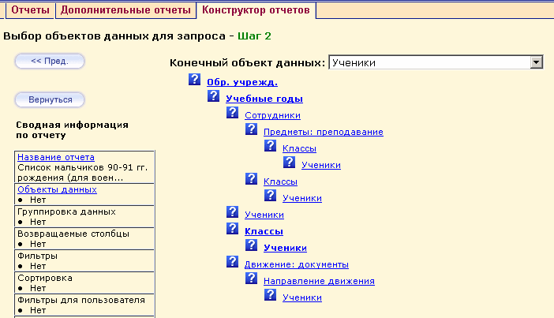

|
Шаг 2 - Выбор объектов данных для запроса
|
| 1. | Выбрать объект в фильтре «Конечный объект данных», - это должен быть тот объект, информацию о котором вы желаете получить в отчете;
|
| 2. | После этого, система автоматически уменьшит «дерево зависимостей объектов», оставив только те «ветки», которые заканчиваются желаемым объектом;
|
| 3. | Вам следует выбрать самую простую «ветку», причём такую, чтобы в ней присутствовали все объекты, данные которых будут использованы в отчете.
|
